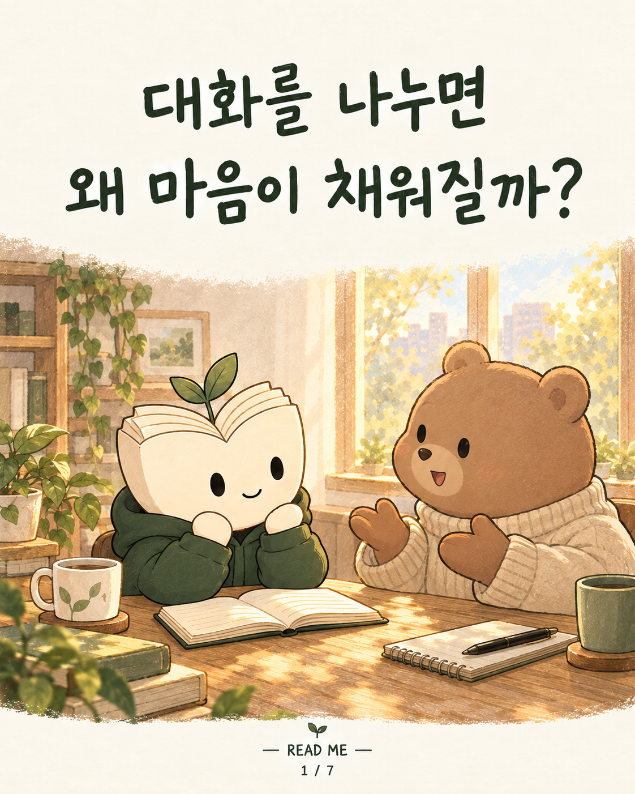
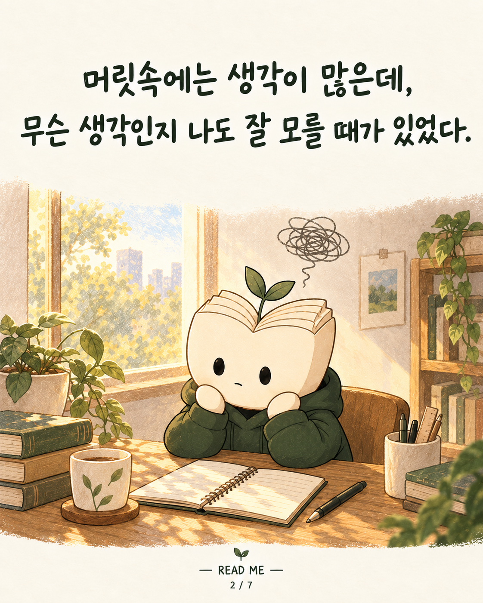
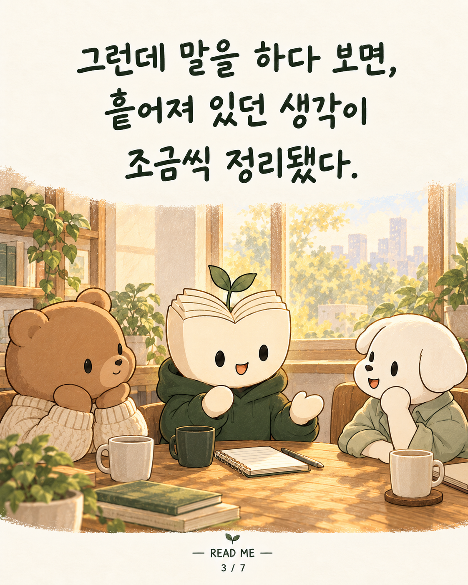
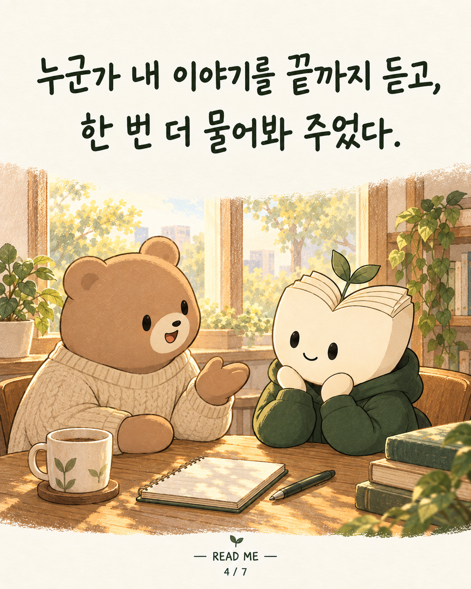
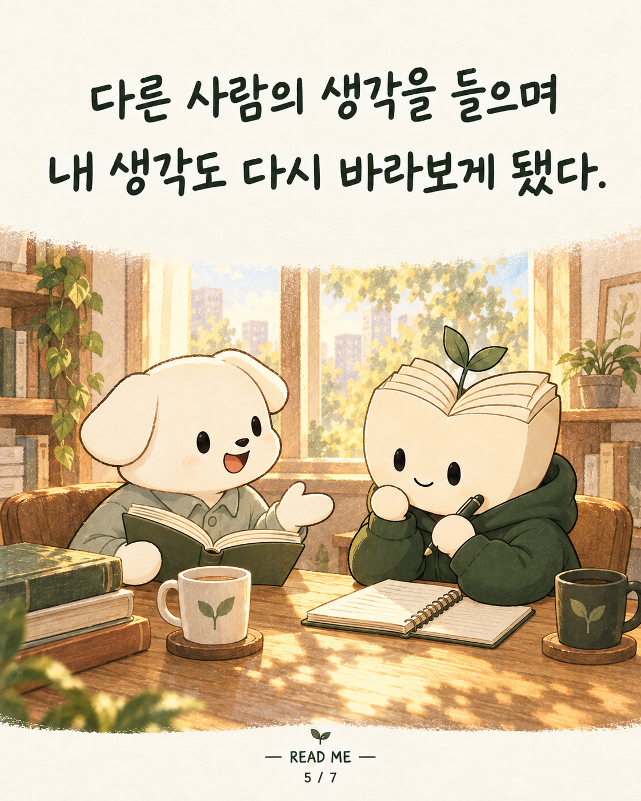
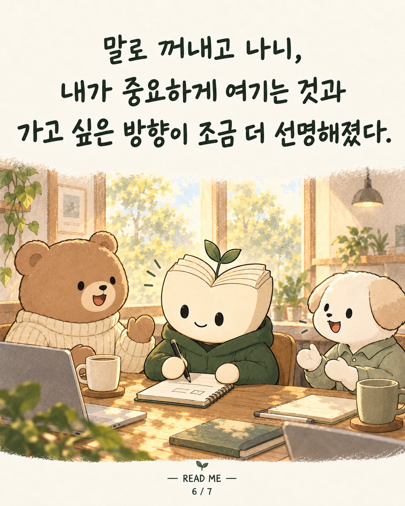
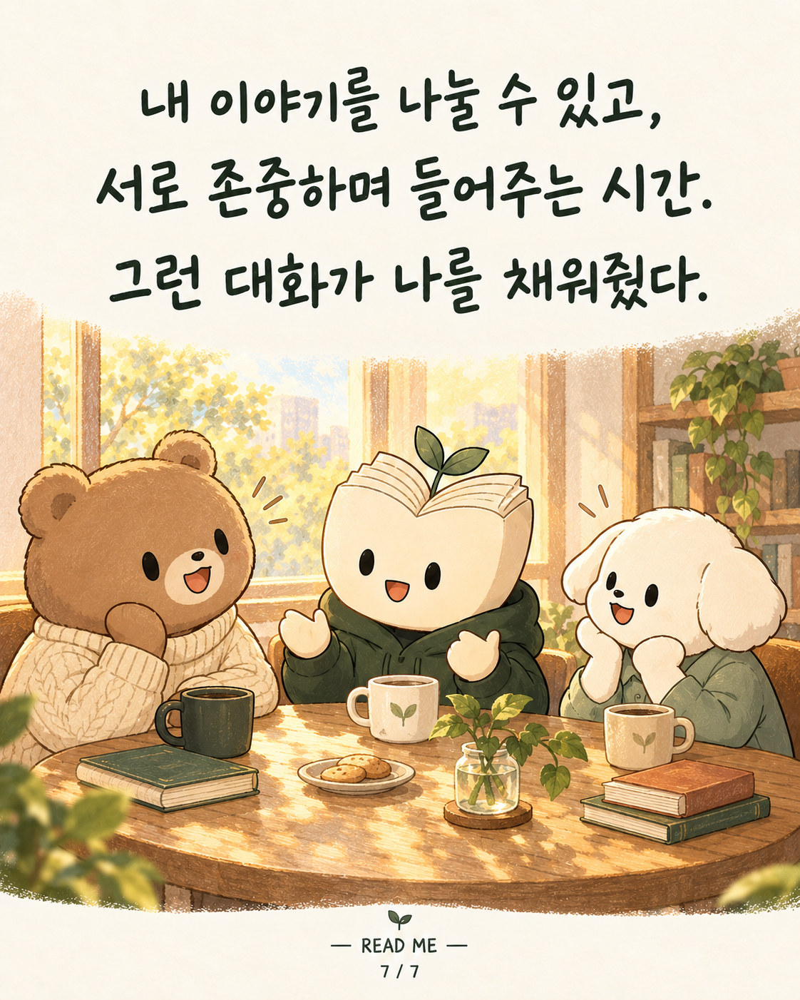

READ ME · 리미 인스타툰 7편

대화를 나누면 왜 마음이 채워질까?

머릿속에는 생각이 많은데, 무슨 생각인지 나도 잘 모를 때가 있었다.

그런데 말을 하다 보면, 흩어져 있던 생각이 조금씩 정리됐다.

누군가 내 이야기를 끝까지 듣고, 한 번 더 물어봐 주었다.

다른 사람의 생각을 들으며 내 생각도 다시 바라보게 됐다.

말로 꺼내고 나니, 내가 중요하게 여기는 것과 가고 싶은 방향이 조금 더 선명해졌다.

내 이야기를 나눌 수 있고, 서로 존중하며 들어주는 시간. 그런 대화가 나를 채워줬다.